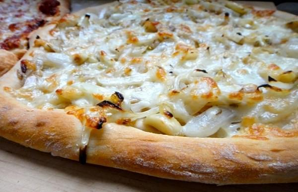

The word fugazza is an Argentinian derivation of the word focaccia, thanks to the significant Italian influence on Argentinian cuisine. But like its name, fugazza is a uniquely Argentinian dish. Fugazza is a kind of pizza, though it lacks a tomato-based sauce and has a thicker, airy crust. It's always topped with a pile of sweet onions, and sometimes with mozzarella cheese as well, and cooked in a deep pizza pan or cast-iron skillet.